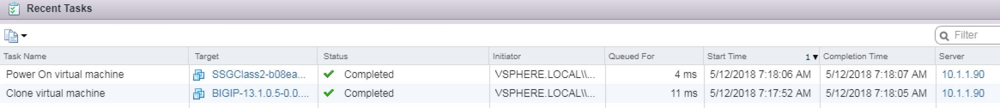
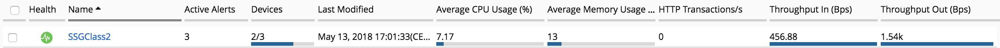

F5 BIG-IQ & Cloud Edition Lab > Class 2: BIG-IQ Deployment with auto-scale on AWS, Azure & VMware (Cloud Edition) > Module 1: Setup a Service scaling group (SSG) in VMWARE Source | Edit on
Lab 1.4: Troubleshoot a SSG¶
In this lab, we will show you how to monitor/troubleshoot your SSG.
To track the activities related to your SSG (deployment, scale-in, scale-out,
delete), you can track two files on your BIG-IQ:
/var/log/restjavad.0.log: in this file, you will be able to review and track all the actions done betweenBIG-IQand your Cloud Provider (here VMWare)/var/log/orchestrator.log: in this file, you will be able to review and track all the actions done via ansible to deploy yourSSG
Since we launched our SSG in the previous lab, you should start seeing logs in
your two SSH sessions (opened during the previous lab)
example of logs for tail -f /var/log/restjavad.0.log | grep vmware
[INFO][12 May 2018 07:17:32 PDT][/cm/cloud/tasks/vmware/scaling/299bb73f-fe9f-449c-9e79-4a6ef4a8dd0f/worker VmwScalingTaskWorker] Advancing from GET_SSG to GET_ENVIRONMENT
[INFO][12 May 2018 07:17:32 PDT][/cm/cloud/tasks/vmware/scaling/299bb73f-fe9f-449c-9e79-4a6ef4a8dd0f/worker VmwScalingTaskWorker] Advancing from GET_ENVIRONMENT to GET_PROVIDER
[INFO][12 May 2018 07:17:32 PDT][/cm/cloud/tasks/vmware/scaling/299bb73f-fe9f-449c-9e79-4a6ef4a8dd0f/worker VmwScalingTaskWorker] Advancing from GET_PROVIDER to VALIDATE_SSG
[INFO][12 May 2018 07:17:32 PDT][/cm/cloud/tasks/vmware/scaling/299bb73f-fe9f-449c-9e79-4a6ef4a8dd0f/worker VmwScalingTaskWorker] Advancing from VALIDATE_SSG to CREATE_ASM_KEYS
[INFO][12 May 2018 07:17:33 PDT][/cm/cloud/tasks/vmware/scaling/299bb73f-fe9f-449c-9e79-4a6ef4a8dd0f/worker VmwScalingTaskWorker] Updated service scaling group 'SSGClass2'
[INFO][12 May 2018 07:17:33 PDT][/cm/cloud/tasks/vmware/scaling/299bb73f-fe9f-449c-9e79-4a6ef4a8dd0f/worker VmwScalingTaskWorker] Advancing from CREATE_ASM_KEYS to ADD_DEVICE
[INFO][12 May 2018 07:17:33 PDT][/cm/cloud/tasks/vmware/scaling/299bb73f-fe9f-449c-9e79-4a6ef4a8dd0f/worker VmwScalingTaskWorker] Starting scale-out for service scaling group 'SSGClass2'
[INFO][12 May 2018 07:17:33 PDT][/cm/cloud/tasks/vmware/scale-out/6bda7062-986c-4526-a895-374fa90f09e3/worker VmwScaleOutTaskWorker] Advancing from GET_SSG to GET_ENVIRONMENT
[INFO][12 May 2018 07:17:33 PDT][/cm/cloud/tasks/vmware/scale-out/6bda7062-986c-4526-a895-374fa90f09e3/worker VmwScaleOutTaskWorker] Advancing from GET_ENVIRONMENT to GET_PROVIDER
[INFO][12 May 2018 07:17:33 PDT][/cm/cloud/tasks/vmware/scale-out/6bda7062-986c-4526-a895-374fa90f09e3/worker VmwScaleOutTaskWorker] Advancing from GET_PROVIDER to VALIDATE_SSG
[INFO][12 May 2018 07:17:33 PDT][/cm/cloud/tasks/vmware/scale-out/6bda7062-986c-4526-a895-374fa90f09e3/worker VmwScaleOutTaskWorker] Advancing from VALIDATE_SSG to CREATE_GUEST
[INFO][12 May 2018 07:17:34 PDT][/cm/cloud/tasks/vmware/scale-out/6bda7062-986c-4526-a895-374fa90f09e3/worker VmwScaleOutTaskWorker] Polling: /mgmt/cm/cloud/orchestrator/vmware/tasks/create-vm/ad57d6e6-2a35-422e-8b90-f2d6108ee530
example of logs for tail -f /var/log/orchestrator.log
2018-05-12 07:17:33 AM Provisioning VM in VMware...
2018-05-12 07:17:33 AM post_item_state({"status": "STARTED", "kind": "cm:cloud:orchestrator:vmware:tasks:create-vm:createvmtaskitemstate", "generation": 0, "lastUpdateMicros": 0, "environmentReference": {"link": "https://localhost/mgmt/cm/cloud/environments/3d906980-66a7-3d24-aff4-2029ced9f27b"}, "startDateTime": "2018-05-12T14:17:33+0000", "vmName": "SSGClass2-b08ea97e-b2f1-4353-aace-11b150008341", "id": "ad57d6e6-2a35-422e-8b90-f2d6108ee530", "selfLink": "https://localhost:8000/mgmt/cm/cloud/orchestrator/vmware/tasks/create-vm/ad57d6e6-2a35-422e-8b90-f2d6108ee530"})
2018-05-12 07:17:34 AM PID = 12365
2018-05-12 07:17:34 AM post_item_state({"status": "STARTED", "kind": "cm:cloud:orchestrator:vmware:tasks:create-vm:createvmtaskitemstate", "generation": 0, "lastUpdateMicros": 0, "pid": 12365, "environmentReference": {"link": "https://localhost/mgmt/cm/cloud/environments/3d906980-66a7-3d24-aff4-2029ced9f27b"}, "startDateTime": "2018-05-12T14:17:33+0000", "vmName": "SSGClass2-b08ea97e-b2f1-4353-aace-11b150008341", "id": "ad57d6e6-2a35-422e-8b90-f2d6108ee530", "selfLink": "https://localhost:8000/mgmt/cm/cloud/orchestrator/vmware/tasks/create-vm/ad57d6e6-2a35-422e-8b90-f2d6108ee530"})
2018-05-12 07:17:39 AM Fetching environment configuration from BIG-IQ
2018-05-12 07:17:39 AM Create VM on vCenter
2018-05-12 07:17:42 AM start task = TASK: Create VM
Here we can see that we are creating a VM. Go to your vCenter interface and check that a VM is getting cloned
Note
Here we can see that only a single VM is getting cloned even if we requested 2 minimum/required instances. This is because we will do it in a sequential manner (one after the other)
Once your VM is cloned and starting, you should see something like this in
your orchestrator.log file
2018-05-12 07:18:14 AM Wait for management ip and retrieve vm info
2018-05-12 07:18:14 AM start task = TASK: Poll VM info for management IP
2018-05-12 07:18:17 AM Ansible task retry...
2018-05-12 07:18:31 AM Ansible task retry...
2018-05-12 07:18:44 AM Ansible task retry...
Here your VM is starting and ansible waits for it to be up and that it retrieved
a Management IP address (provided through DHCP)
Note
You can open a VMWare console of your new VM instance to track its booting progress
Once your VM has a management IP address, Ansible will enforce the information that have been defined in your device template.
You should see this kind of log in your /var/log/restjavad.0.log file
[INFO][19 Apr 2018 19:50:32 CEST][/cm/cloud/tasks/vmware/scale-out/ef16b0f9-ddfa-41d0-90a1-bc6ce747f513/worker VmwScaleOutTaskWorker] Device 10.1.1.115 created (SSGClass2-3f91f63b-6369-4edd-85c1-df229c8b4669 / 4235e453-adbb-0d44-d28f-aa8ab70bf2eb)
[INFO][19 Apr 2018 19:50:32 CEST][/cm/cloud/tasks/vmware/scale-out/ef16b0f9-ddfa-41d0-90a1-bc6ce747f513/worker VmwScaleOutTaskWorker] Updated service scaling group 'SSGClass2'
[INFO][19 Apr 2018 19:50:32 CEST][/cm/cloud/tasks/vmware/scale-out/ef16b0f9-ddfa-41d0-90a1-bc6ce747f513/worker VmwScaleOutTaskWorker] Advancing from CREATE_GUEST to RESET_DEFAULT_PASSWORDS
[INFO][19 Apr 2018 19:50:33 CEST][/cm/cloud/tasks/vmware/scale-out/ef16b0f9-ddfa-41d0-90a1-bc6ce747f513/worker VmwScaleOutTaskWorker] Device template does not specify root password; random password will be used
[INFO][19 Apr 2018 19:50:33 CEST][/cm/cloud/tasks/vmware/scale-out/ef16b0f9-ddfa-41d0-90a1-bc6ce747f513/worker VmwScaleOutTaskWorker] Using admin password specified in device template
[INFO][19 Apr 2018 19:51:19 CEST][/cm/cloud/tasks/vmware/scale-out/ef16b0f9-ddfa-41d0-90a1-bc6ce747f513/worker VmwScaleOutTaskWorker] Advancing from RESET_DEFAULT_PASSWORDS to WAIT_FOR_DEVICE_READY
[INFO][19 Apr 2018 19:51:21 CEST][/cm/cloud/tasks/vmware/scale-out/ef16b0f9-ddfa-41d0-90a1-bc6ce747f513/worker VmwScaleOutTaskWorker] Device 10.1.1.115 is a BIG-IP running version 13.1.0.5 build 0.0.5
[INFO][19 Apr 2018 19:51:33 CEST][/cm/cloud/tasks/vmware/scale-out/ef16b0f9-ddfa-41d0-90a1-bc6ce747f513/worker VmwScaleOutTaskWorker] Advancing from WAIT_FOR_DEVICE_READY to APPLY_DEVICE_TEMPLATE
[INFO][19 Apr 2018 19:51:34 CEST][/cm/cloud/tasks/vmware/scale-out/ef16b0f9-ddfa-41d0-90a1-bc6ce747f513/worker VmwScaleOutTaskWorker] Polling: /mgmt/cm/cloud/orchestrator/devicetemplate/6e39e51e-86d7-468d-8676-bf2ec4d4c999
You should see this kind of log in your /var/log/orchestrator.log file
2018-04-19 07:51:47 PM start task = TASK: Gathering Facts
2018-04-19 07:51:52 PM Ansible callback on OK. result.rc=None
2018-04-19 07:51:52 PM start task = TASK: name: test connection to BIG-IP
2018-04-19 07:51:54 PM Ansible callback on OK. result.rc=None
2018-04-19 07:51:54 PM start task = TASK: build launch command
2018-04-19 07:51:54 PM Ansible callback on OK. result.rc=None
2018-04-19 07:51:54 PM start task = TASK: copying f5-cloud-libs to device
2018-04-19 07:52:19 PM Ansible callback on OK. result.rc=None
2018-04-19 07:52:19 PM start task = TASK: change hostname to SSGClass21.f5demo.local
2018-04-19 07:52:54 PM Ansible callback on OK. result.rc=0
2018-04-19 07:52:54 PM start task = TASK: setting dns server to 8.8.4.4
2018-04-19 07:53:03 PM Ansible callback on OK. result.rc=0
2018-04-19 07:53:03 PM start task = TASK: setting ntp server to pool.ntp.org
2018-04-19 07:53:08 PM Ansible callback on OK. result.rc=0
2018-04-19 07:53:08 PM start task = TASK: setting user accounts to user:admin,role:admin
2018-04-19 07:53:21 PM start task = TASK: change the management ssl port to 443
2018-04-19 07:53:25 PM Ansible callback on OK. result.rc=0
2018-04-19 07:53:25 PM start task = TASK: setting provisioned modules to ltm:nominal
2018-04-19 07:53:30 PM Ansible callback on OK. result.rc=0
Once this VM is fully onboarded, you will be able to see that we will start
provisioning another VM to reach our target of 2 devices for our SSG
We will know your SSG is done being deployed when you’ll see such log files in
/var/log/restjavad.0.log
[INFO][19 Apr 2018 20:11:52 CEST][/cm/cloud/tasks/vmware/scaling/3de355e4-ea9f-46a6-8d0d-e02fb99e4c21/worker VmwScalingTaskWorker] Advancing from ADD_DEVICE to FINISHED
[INFO][19 Apr 2018 20:11:52 CEST][/cm/cloud/tasks/vmware/scaling/3de355e4-ea9f-46a6-8d0d-e02fb99e4c21/worker VmwScalingTaskWorker] Updating service scaling group 'SSGClass2' status to ready
[INFO][19 Apr 2018 20:11:52 CEST][/cm/cloud/tasks/vmware/scaling/3de355e4-ea9f-46a6-8d0d-e02fb99e4c21/worker VmwScalingTaskWorker] Updated service scaling group 'SSGClass2'
[INFO][19 Apr 2018 20:11:52 CEST][/cm/cloud/tasks/vmware/scaling/3de355e4-ea9f-46a6-8d0d-e02fb99e4c21/worker VmwScalingTaskWorker] Finished scaling task for service scaling group 'SSGClass2' to create 2 and remove 0 device(s)
At this stage, if you check the status of your SSG in your BIG-IQ (Go to
Applications > Environments > Service Scaling Groups), you will see your
SSG being provisioned with a gray Health.
Once it is fully deployed, you’ll see this:
{kind=link}
Note
Here you can see for the devices: 2/3 - you see the number of provisioned VEs and the max number of VEs that you’re allowed to deployed in this SSG
Click on your SSG (SSGClass2)
{kind=link}
This is the interface to monitor the status and performance of your SSG. Click
on Configuration
The properties page will give you access to the previously defined parameters
related to your SSG
If you click on Devices, You’ll be able to review the devices deployed and their Management IP addresses.

If you click on the management IP address of the devices. It will
open a new tab to access its UI.
Note
Here you’ll need to connect to your BIG-IQ from the RDP session. The
VEs in your SSG will not show up in UDF and have a mgmt IP in the subnet 10.1.1.0/24.
In Chrome, connect to your BIG-IQ (10.1.1.4 / admin - admin), go to Applications
> Environments > Service Scaling Groups, click on SSGClass2, go to
Configuration, click on Devices and click on one of the management IP address.
Note
Remember that we changed the default admin password
{kind=link}
Browse through the BIG-IP UI to review the configuration that should have been
pushed:
DNS & NTP
modules provisioned
VLANs
Self-IPs
Note
If you pay attention to the DNS setup, you should realize that the DNS setup
on your BIG-IP is not the one from your device template. This got overwritten
by the DHCP server (which is setup to push 8.8.8.8 as a DNS server)
Note
if you go to your BIG-IQ UI and go to Devices > BIG-IP Devices , you will
not be able to see your SSG devices. They won’t be listed here.